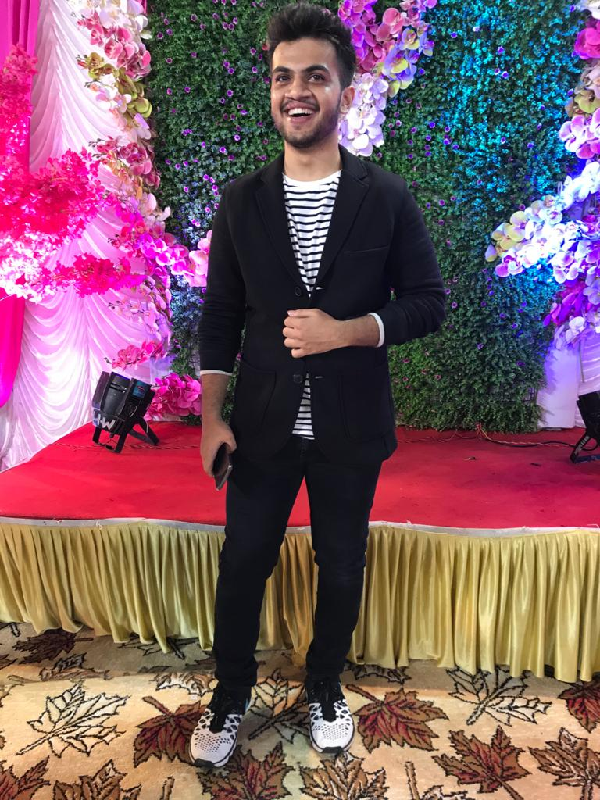

{{ p.title }}
{{ p.date }}
{{ p.desc }}

Hi 👋 :)
I'm Rashmil Panchani. I am an athlete at heart, with an entrepreneurial spirit and always up for learning new things. Being able to adjust to situations makes me a very flexible asset to anyone who hires me and to my collegues. My passion lies in creating and developing new things which includes WebApps, Embedded Systems and applying Machine/Deep learning models in various projects. My research interest lies in Scene Perception and Cognitive tasks of Natural Language Processing. Apart from a techie, I am also a photographer(Long-exposures being my favourite).
August 2021 - December 2022
University of Illinois Urbana-Champaign
GPA: 3.94 / 4
Master of Computer Science, graduated December 2022 with a GPA of 3.94 / 4.
August 2017 - May 2021
DWARKADAS J. SANGHVI COLLEGE OF ENGINEERING
CGPA: 9.963 / 10
Bachelor's in Computer Engineering with a CGPA of 9.963 / 10.
{{ p.date }}
{{ p.desc }}
{{ w.duration }}
{{ w.company }}
{{ w.desc }}